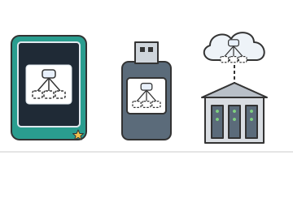

Comparing storage locations
Learn with an AI tutor
An AI tutor explains this page to you and helps you with the exercises. Choose your assistant:
Open with Claude Open with ChatGPT Open with Mistral Vibe
You use your own account with the provider. The assistant is not offered by lernapps.net: lernapps only provides the content and the exercises. The choice holds for all pages, on this device only.
Storage almost full
Mia's tablet says: “Storage almost full. 2 GB left.” Mia wants to keep her videos from Seeberg, files with the extension .mp4. But where?
On the pages before, you sorted files and found them by their path. On this page you will compare where files can be stored. First, convert the units.
Exercise
Solution
Right answer: 2,000 MB
1 GB = 1000 MB, so 2 GB = 2 · 1000 MB = 2000 MB. A video of 1 minute is about 100 MB. With 20 minutes of video the tablet is full.
Three places for Mia's files

© CC-BY-4.0- the tablet: the storage inside the device
- a USB stick: a small storage device you plug in
- the cloud: storage on the computers of a company, over the internet
Mia's files in three places. The small tree stands for Mia's folder tree. The numbers belong to the names below.
- storage location
A storage location is the place where a file is kept, for example a tablet, a USB stick or a cloud.
- cloud storage
Cloud storage is on the computers of a company. You reach your files over the internet, usually with a name and a password.
| Place | How much space? | When can you get to it? |
|---|---|---|
| tablet | 64 GB, but almost full | whenever you have the tablet with you |
| USB stick | 32 GB | on any device with the right socket, even without internet |
| cloud | 15 GB, free | from any device, but only with internet |
Safe?
Each place has its risk. A tablet can be dropped, lost or stolen. A stick is so small that it is easily lost. In the cloud you give your data to a company, and anyone who knows your password can get to it.
Example
Where should the videos go?
Mia compares the three places for the videos from Seeberg, about 3000 MB:
- Space: there are 2000 MB left on the tablet, which is not enough. 32 000 MB fit on the stick, 15 000 MB in the cloud.
- Access: Mia also wants to show the videos at her grandma's. There is no internet there. She can take the stick with her.
- Safety: a stick can get lost or break. So Mia also uploads the videos to the cloud; the 15 000 MB are enough for that.
Mia takes the stick to her grandma's. And the videos are kept in two places: on the stick and in the cloud.
Practice
Exercise
Three worked tasks, each with its solution:
Task no. 1
How many photos of about 4 MB each fit on an empty USB stick with 64 GB?
Hint
First convert the GB into MB. Then divide by the size of one file.
Solution
- 64 GB = 64 · 1000 MB.
- Divided by 4 MB for each file: 16,000 photos.
Right answer: 16,000
Task no. 2
How many audiobooks of 1 hour each of about 50 MB each fit on an empty USB stick with 32 GB?
Hint
First convert the GB into MB. Then divide by the size of one file.
Solution
- 32 GB = 32 · 1000 MB.
- Divided by 50 MB for each file: 640 audiobooks of 1 hour each.
Right answer: 640
Task no. 3
How many songs of about 5 MB each fit on an empty USB stick with 64 GB?
Hint
First convert the GB into MB. Then divide by the size of one file.
Solution
- 64 GB = 64 · 1000 MB.
- Divided by 5 MB for each file: 12,800 songs.
Right answer: 12,800
Exercise
Three worked tasks, each with its solution:
Task no. 1
Mia wants to keep the videos so that they are still there even if her tablet and a stick at home get lost. Which storage location fits best here?
Hint
Ask yourself: is there internet there? Who needs the files, and where?
Solution
- Mia wants to keep the videos so that they are still there even if her tablet and a stick at home get lost. That is why the storage location cloud fits here.
Right answer: cloud
Task no. 2
Mia wants to show her speech on the school computer tomorrow. At school she has no internet, and her tablet stays at home. Which storage location fits best here?
Hint
Ask yourself: is there internet there? Who needs the files, and where?
Solution
- Mia wants to show her speech on the school computer tomorrow. At school she has no internet, and her tablet stays at home. That is why the storage location USB stick fits here.
Right answer: USB stick
Task no. 3
Mia wants to give her friend Jona the videos of the class trip. Jona has no internet at home. Which storage location fits best here?
Hint
Ask yourself: is there internet there? Who needs the files, and where?
Solution
- Mia wants to give her friend Jona the videos of the class trip. Jona has no internet at home. That is why the storage location USB stick fits here.
Right answer: USB stick
Exercise
Solution
Right answer: tablet – If it falls and breaks, everything that is only on it is gone.; USB stick – It is so small that it easily gets lost in a bag.; cloud – Without internet you cannot get to your files.
Each place has its own risk. All three can store any kind of file.
Exercise
Solution
Right answer: The statement is false.
The cloud is just a picture. The files are kept on real computers of a company, in a big building full of computers.
Exercise
Solution
internet right answer
Yes, she can only reach the cloud over the internet.
her login with a name and password right answer
Yes, this shows that they are her files.
her own tablet
No, she can reach the cloud from any device, so from Selin's too.
the USB stick that also has the photos on it
She does not need the stick for the cloud. It is a different storage location.
For the cloud you need internet and your login. It does not matter which device you use.
Your rule
My rule for my device
Every file gets a clear name and its folder. What is important is kept in two places.
Looking back: you tidied up Mia's tablet, found files by their path and compared three storage locations. Try the rule on your own device. Why “in two places”? You will learn that in a later chapter, when Mia's tablet gets lost.
Found a mistake or have an idea for this app?